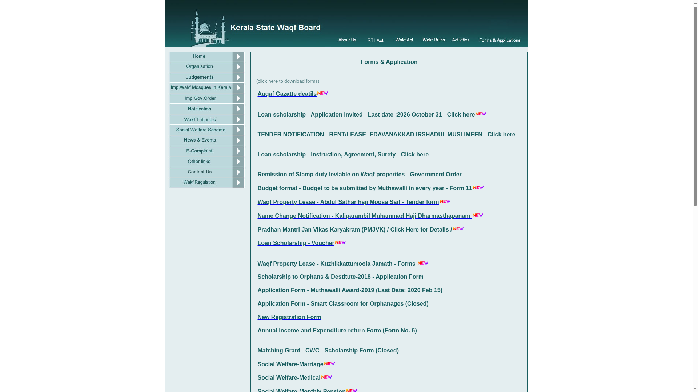
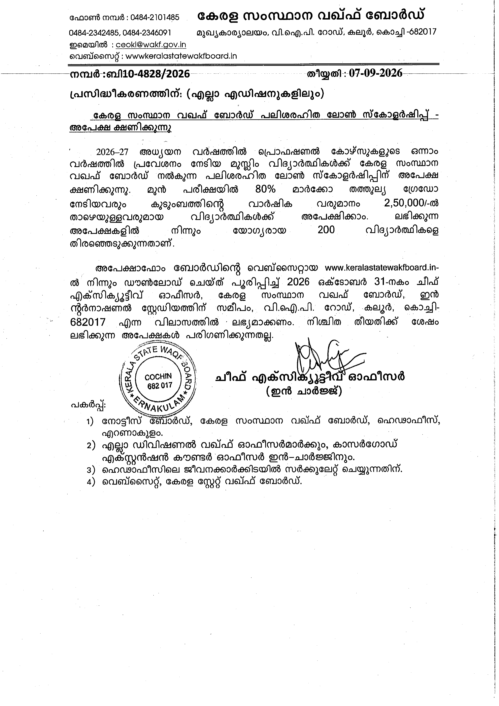

Kerala Waqf Board Loan Scholarship 2026: Rs 5,000 a month interest-free, apply by 31 October
The Kerala State Waqf Board is inviting applications for its interest-free Loan Scholarship under the Revolving Loan Scholarship Scheme. First-year Muslim students admitted to professional courses in 2026-27 get Rs 5,000 a month. The filled offline form must reach the Board's office in Kaloor, Kochi by 31 October 2026.
Who can apply
- Muslim students who are Kerala residents
- Admitted in 2026-27 to the first year of a professional course (engineering, medicine, BSc nursing, BPharm, MBA, MCA and similar programmes)
- At least 80% marks or equivalent grade in Plus Two / Class 12
- Annual family income below Rs 2.5 lakh
What you get
- Rs 5,000 per month as an interest-free loan scholarship for the course period
- 200 students are selected statewide, on merit, from the applications received
Repayment and surety
- No interest. Repayment in instalments starts 6 months after you finish the course and must be completed within 24 months
- Selected students sign an agreement on Rs 200 stamp paper with two sureties
- One surety must be a person working in a government, semi-government, public sector, local self-government institution, co-operative bank or society; or an earning father, mother, brother or sister of the student
How to apply: step by step
Checked on the live Kerala State Waqf Board website on 21 October 2026.
- Open the Board's Forms & Applications page: keralastatewakfboard.in/forms.html. The site opens on http, not https - that is normal for this Board site.
- Click "Loan scholarship - Application invited - Last date: 2026 October 31" to download the application form (PDF).
- Print and fill the form: student and guardian details, annual income, qualifying exam marks, and the institution and course you joined. Attach a copy of your Plus Two / Class 12 mark list.
- The student and the parent or guardian must both sign the declaration on the form.
- Post or deliver the form to: The Chief Executive Officer, Kerala State Waqf Board, V.I.P. Road (near International Stadium), Kaloor, Kochi - 682017, so that it reaches by 31 October 2026. Late applications are not considered.
- For questions, call the Board: 0484-2101485 (also 0484-2342485, 0484-2346091).


Video guides
We searched YouTube on 21 October 2026 for a step-by-step video for this year's Waqf Board loan scholarship application in English and in Malayalam, and found none we could verify as current and reliable, so we are not linking any. The application is a single offline form; the steps above cover it.
We read the Kerala State Waqf Board Forms & Applications page, the official application form (loan2026.pdf) and the Board's Revolving Loan Scholarship Scheme page on 21 October 2026. The Rs 5,000 monthly amount, 200-seat selection, 80% Plus Two mark and Rs 2.5 lakh income conditions are as reported by Malayala Manorama and CIGI on 20 October 2026; the Board's own scheme page still carries older figures marked under review.
Sources: Kerala State Waqf Board - Forms & Applications, official application form (PDF), Revolving Loan Scholarship Scheme page, Malayala Manorama, 20 October 2026, CIGI blog. Checked 21 October 2026. This is an AiCoN explainer, not a government publication. AiCoN is not affiliated with the Kerala State Waqf Board.